Preparing EMF Models for CDO


Preparing EMF Models for CDO |
|
Table of Contents
| 1 | Creating an Ecore Model | ||
| 2 | Using the CDO Model Importer | ||
| 3 | Using the CDO Model Migrator | ||
| 4 | Migrating a GenModel Manually | ||
| 5 | Generating a Model | ||
| 6 | Modifying Generated Getters and Setters | ||
There's really not much to say about this step. The .ecore file for CDO models is the same as for pure EMF models. Use the Empty EMF Project New Wizard to create an initial project for your model:
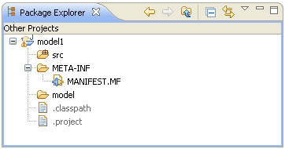
Create an ordinary Ecore model file in the models folder. The model1 example model in the usual Ecore model editor looks like follows:
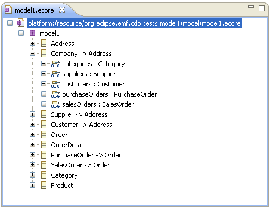
The XML representation of this Ecore model is:
 |
company.ecore |  |
 |
|
<?xml version='1.0' encoding='UTF-8'?>
|
||||
 |
 |
|||
The model project should look similar to this, now:
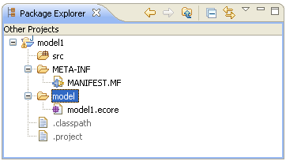
The easiest way to create a CDO enabled GenModel is to use the CDO Migrator utility that is shipped with the CDO SDK. It includes a special Ecore Model Importer that adjusts all the GenModel properties needed to generated CDO native models. Right-click the Ecore model file and select New and Other... and choose the EMF Generator Model New Wizard:
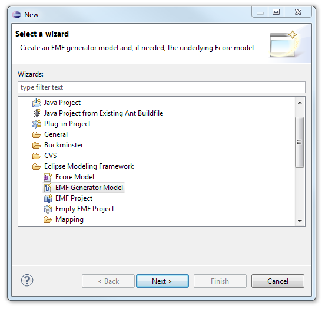
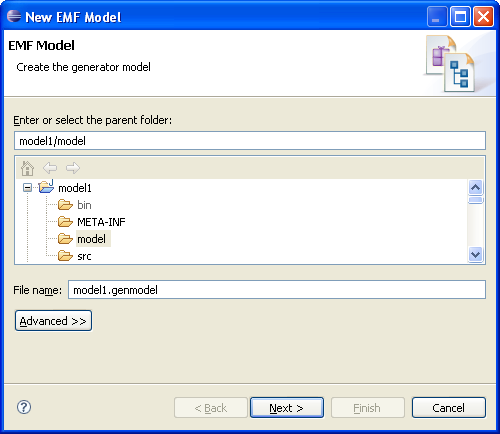
On the next page, the Select a Model Importer page, select the Ecore model (CDO native) importer:
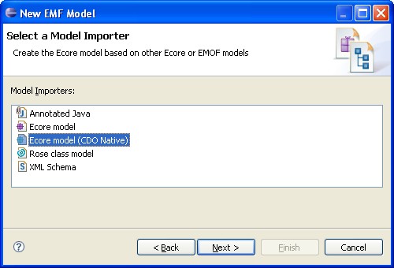
On the next page, the Ecore Import page, click the Load button:
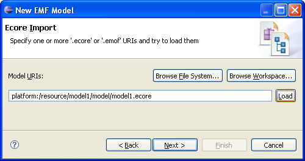
On the next page, the Package Selection page, adjust the settings depending on your model and its referenced models:
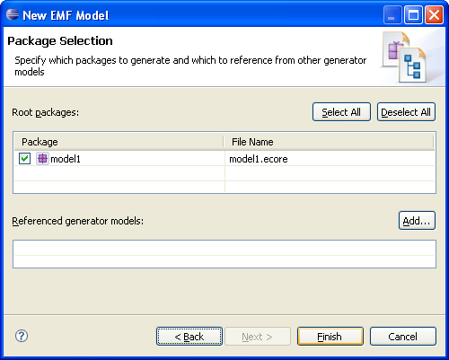
After clicking the Finish button your model project should look similar to this (please note that the CDO marker file META-INF/CDO.MF has also been created by the importer):
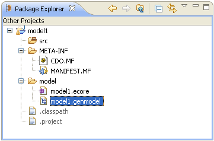
If you don't want to use the CDO Model Importer to automatically let a proper GenModel be created for you it is still rather easy to migrate an existing GenModel with the CDO Migrator:
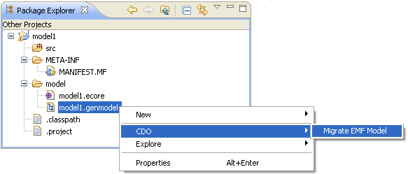
In case the generator model was successfully migrated to CDO the following dialog box will appear:
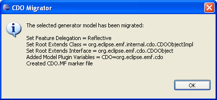
Proceed with Generate The Model.
If you don't want to use the CDO Model Importer to automatically let a proper GenModel be created for you it is still rather easy to migrate an existing GenModel by hand.
The EMF generator model for your Ecore model is much like a usual GenModel except for the following four differences:
Reflective
CDO=org.eclipse.emf.cdo
org.eclipse.emf.internal.cdo.CDOObjectImpl
org.eclipse.emf.cdo.CDOObject

Note that you do not need to generate an editor if you want to use your model with the CDO User Interface A dedicated model editor is only needed if you plan to use your model with normal XML based files as well. Even in this scenario it could be simpler to use the EMF Reflective Model Editor though.
The XML representation of this GenModel is:
|
company.genmodel | |
|
|
<?xml version='1.0' encoding='UTF-8'?>
|
||||
|
|
|||
Generate the Java code for your model as you are used to do it:
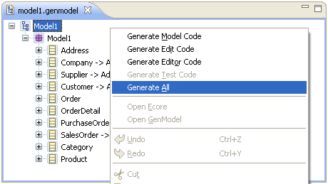
The result of the generation can look similar to this (some artifacts are hidden to remove noise from the Package Explorer):
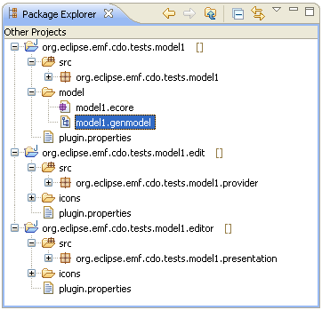
If you want to modify the behavior of generated getters and setters (or have already done so in existing models) you might want to try dynamic feature delegation (introduced in EMF 2.5). With this pattern, the reflective methods like eGet still call your generated method like getX() and then that calls the dynamic reflective method like eDynamicGet. It effectively produces the same behavior as "Reflective" delegating but does so by delegating through your generated accessors allowing you to specialize those as you could when you used "None"...